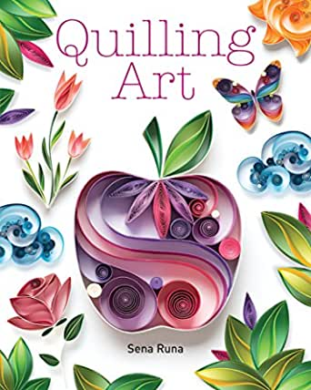
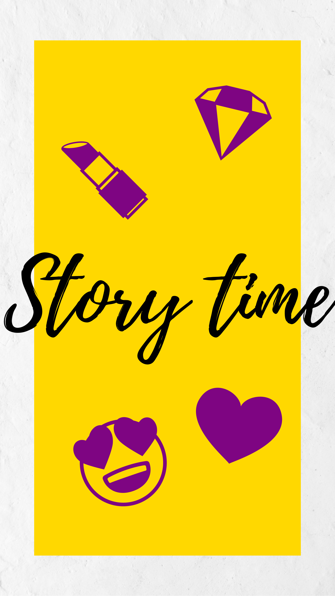
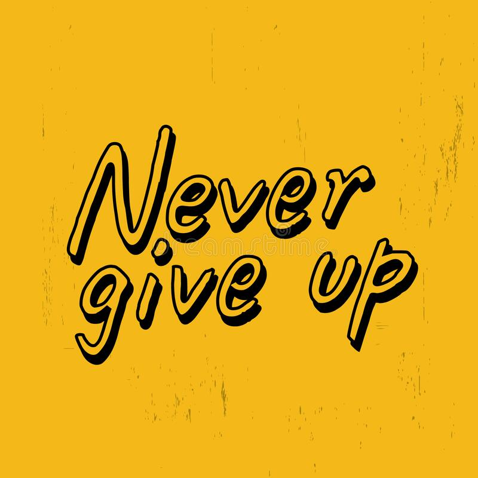

Hi everyone, My name is Eveyln or Evie for short. This is my blog page and everything about me. To start I want to tell you a little bit about myself. I love to quill and do arts and crafts and I talk way too much. My family owns a funeral home that I work at part time. I have a crazy story to tell you about, but that will be later in my blog.
1) Oren - He is my new found friend after the crazy story I will tell you later in my blog, but for some backstory he lost his parents in a car crash. I met him when his uncle came to the funeral home to arrange his parent’s funeral. He refused to talk after his parents died and only communicated by texting on his phone.
2) My Mom and Dad - They run the family funeral home and are always supporting and motivating me when I feel down. I want to be just like them when I grow up.
3) Jared - He is Oren’s uncle and is taking care of him because of his parent’s death. He is constantly doubting if his is a good guardian
4) Sasha and Miri - They are the biggest pain ever, they never shut up and have nothing better to do then to bully me.
5) Nate - He’s my brother, nothing much about him
I live in a nice urban neighborhood. We live right next to the funeral home that my mom and dad run. There is a nice ice cream store that my dad takes me to pretty often. It’s an amazing town to live in. Most of the people in the neighbourhood are pretty nice as well, except for a few certain people.

Alright, to give you a quick overview what happened is I was working at my parent’s funeral home. Soon I met a boy named Oren, he had lost his parents in a car crash and he refused to talk to anyone. The only way he communicated was texting on his phone. I met him when he and his uncle came to plan his parent’s funeral. After I heard his tragic story I was determined to help him.
1) I met Oren for the first time - My parents introduce Me to Oren and tell Me to talk him while they discuss Oren’s parent’s funeral details
2) I see Oren again at the cemetery - Me and her dad went to do some errands, but had to quickly stop at the cemetery. This is when I noticed Oren by his parent’s graves and invited him to get some ice cream with us, and then brought him home for dinner. Soon Oren’s uncle shows up and after exchanging small talk with my parents they decided it would be best if I gave Oren some company while Oren’s uncle was at work for the rest of the summer
3) Me and Oren get to know each other - Me and Oren finally get the chance to get to know each other when he comes to my house, I found out that Oren likes to garden and cook. Afterwards Oren texts me and asks her to show him what happens to the bodies at the cemetery, but I was hesitant on showing him
4) Oren wants to learn to quill - Oren asked me to teach him how to so he can make a picture to honor his parents
5) I let Oren take a quick look at the cemetery - I finally cave in and let Oren take a small look at what happens at the cemetery so he can get some closure about his parents
6) Sasha and Miri cause trouble- Oren and I go watch a movie but unfortunately bump into Sasha and Miri, They make fun of me and make me upset and when they get back home I lashed out on Oren saying “you aren’t talking just because you want people to feel sorry for your parents death.” Then Oren runs out the house and yells “I won’t talk because I KILLED THEM (The first time he talks after the death of his parents).” A few minutes later Oren’s uncle arrives and starts talking with my dad. Then I went looking for Oren and found him by his parent’s graves. After some back and forth banter we work things out and Oren tells me the whole story. They were in the car and he was asking his parents if he could go to wilderness camp, but his parents said “no” and he got upset and said “I wish you both were dead” right before the car crash.
7) Sasha and Miri come back for more- A few days later we bump into Sasha and Miri as they were getting quilling supplies. They start to make fun and embarrass me again, but then the most shocking thing happened, Oren stood up for me and scared them off
8) Oren wanted to see a body in the cemetery fridge - after we got home and finished the quilling project Oren asked me if he could see the Cemetery one last time and when we went we found out there was a body in the fridge. We were about to open it but my dad stopped us just in time. He explained to us it was disrespectful and gave Oren closure on his parents so he didn’t want to do it again.
9) We finally end the summer by going camping together and eating s'mores in front of a bonfire.
After this crazy summer experience I have seen first hand the power of not giving up. Oren had lost his parents and had been having a lot of trauma and regret, but as the we spent more time together and thanks to the support and help of the people around him was able to recover. Things will never be the same again, but you have to learn to let go of the past.
I would like to give credit to Ryan Mulligan for the amazing background animation, click the link below to check him out
Ryan Mulligan